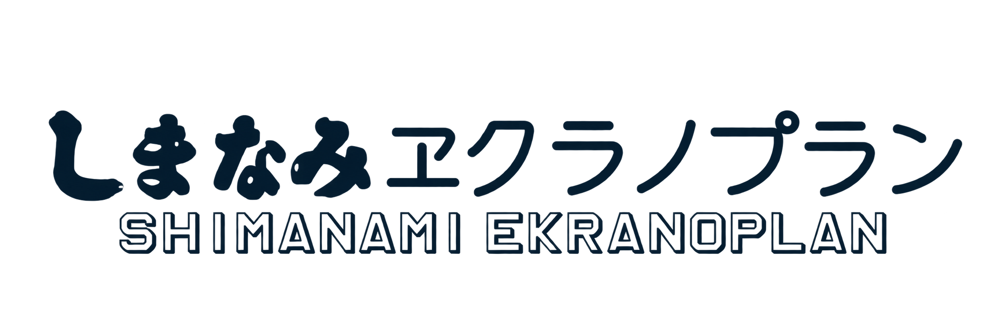
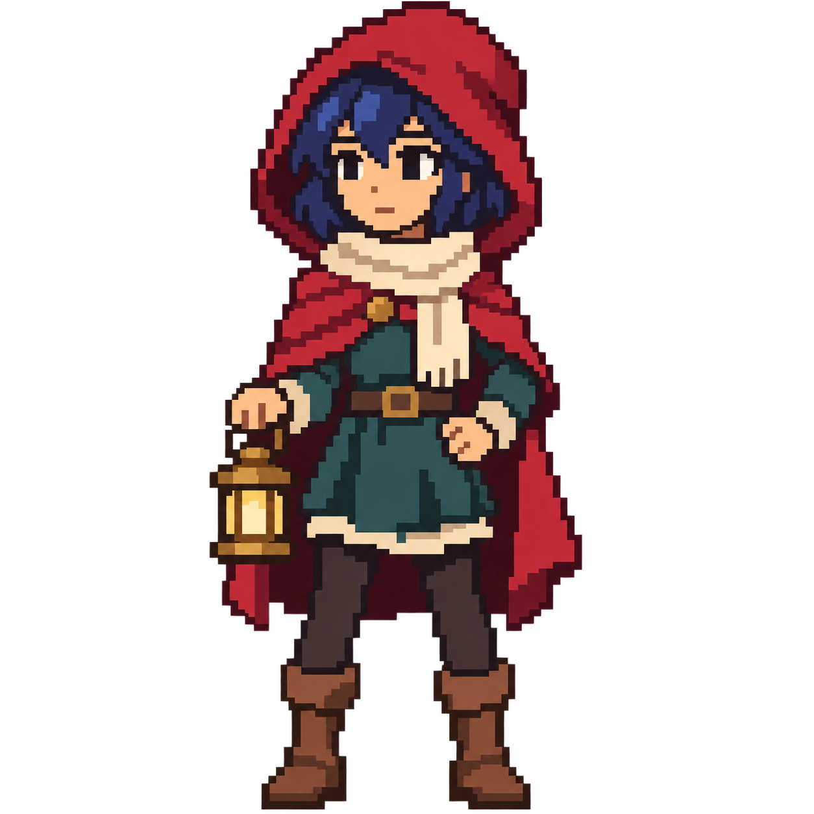
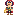
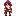

좌우 방향키로 사진 전환, Enter로 확대. 마우스를 올리거나 키보드로 선택하면 자동 전환이 멈춥니다.
문제 해결 과정
차량이 많을 때 발생하는 프레임 저하 줄이기
VRChat 월드에서는 전용 서버에 차량 계산을 맡길 수 없어, 한 참여자의 PC에서 차량 상태를 계산해 다른 사용자에게 보내도록 구성했습니다. 이 PC는 화면도 함께 그려야 하는데, 차량의 이동 계산과 반복되는 주변 검사가 프레임 저하의 원인이 됐습니다. 차선 경로를 미리 저장하고, 앞차와 정지선까지의 거리는 계산으로 구해 감지 검사에서 제외했습니다. 사람과 장애물만 검사하고, 검사할 차량을 프레임마다 나눠 계산 부담을 줄였습니다.
평균 CPU 프레임 시간 32.4% 감소
개선 전17.65 ms
개선 후11.92 ms
동일 PC의 Unity Editor에서 차량 10대와 가상 플레이어 80명으로 각 300프레임을 비교했습니다. 여러 구조 변경을 함께 적용한 결과이며, 비교 장면은 원리 설명용 재현입니다.
실제 월드의 도로 좌표와 감지 및 회피 흐름을 반영한 설명용 웹 시연입니다. 보행자의 갑작스러운 진입과 교통량, 움직임은 설명을 위해 구성했으며, 시뮬레이션은 3배속으로 재생됩니다.
실제 로직을 반영한 교통 시뮬레이션
앞차 거리BoxCast 감지
차량 통행
기술 개선과 최적화
차선의 위치와 방향을 미리 저장
다음 경유점을 향해 방향을 조정하던 방식에서, 도로 위의 위치와 방향을 미리 계산해 저장하는 방식으로 바꿨습니다. 주행할 때는 이동 거리로 저장된 위치를 찾아 사용해 반복 계산을 줄였습니다.
개선 전다음 경유점을 향해 이동개선 후저장한 차선 위치로 이동
거리 계산과 감지를 함께 써서 검사 줄이기
차선 정보로 앞차와 정지선까지의 거리를 구하고, BoxCast는 사람과 장애물을 감지하는 데 사용했습니다. 두 방식을 결합해 매번 물리 검사로 확인할 대상을 줄였습니다.
길이 막히면 먼저 정지합니다. 뒤 공간과 옆 차선이 비어 있을 때만 후진해 공간을 확보한 뒤 차선을 바꿉니다.
거리 계산보행자 감지
차량 검사를 한 프레임에 몰아 하지 않기
한 PC가 모든 차량을 관리하므로, 감지 검사까지 한 번에 몰리면 화면이 끊길 수 있습니다. 한 프레임에 차량 2대씩 차례로 검사하고 다음 프레임에서 이어가도록 바꿨습니다.
개선 전차량 10대를 한 프레임에 검사개선 후프레임마다 차량 2대씩 검사
02 / 042024.12.02 — 2025.01.25+ 후속 개선 2026.09

UnityC#UdonSharp
#장거리 비행 중 떨림 줄이기#일본 도쿄 전시#일본인 아티스트와 협업
바다 위를 낮게 나는 기체를 직접 조종하는 VRChat 비행 시뮬레이터입니다. VR에서는 손동작으로, PC에서는 키보드로 조종하며 출력을 높여 이륙하고 바다 위를 비행할 수 있습니다. 계기판으로 속도와 높이, 기울기를 확인하며 다른 이용자와 함께 비행을 즐길 수 있습니다.
Unity에서 위치를 나타내는 숫자는 표현할 수 있는 자릿수가 제한되어 있습니다. 좌표의 기준점인 원점(0, 0, 0)에서 멀리 이동해 숫자가 커지면, 작은 움직임을 정확히 표현하기 어려워 기체나 주변 물체가 미세하게 떨릴 수 있습니다. 이 문제를 줄이기 위해 기체와 탑승자는 원점에 고정하고, 지형을 반대 방향으로 움직였습니다. 후속 개선에서는 위치를 타일 번호와 타일 안의 좌표로 나눠 기록했습니다. 이동 거리가 늘어나도 기체 주변의 좌표값은 일정한 범위 안에서 유지하도록 했습니다.
타일 경계
기체는 원점에 고정X 0 / Z 0
현재 지도 타일(0, 0)
타일 안의 X 좌표X+0
좌표 처리 방식을 쉽게 보여주기 위해 X축 이동만 표현한 시연입니다. 기체의 고정 위치와 지도의 이동 위치는 서로 다른 기준으로 표시합니다. 타일 하나의 크기는 10,000이며, 이동 속도와 높이 변화는 설명을 위해 조정했습니다. 경계를 지나도 이동은 계속됩니다. 오른쪽 위 버튼으로 시연을 멈추거나 다시 시작할 수 있습니다.
03 / 04SSAFY
Idea2Strategy
JavaSpring BootAI 스킬AI 하네스Git
#전략 작성과 백테스트 개발#AI 하네스 설계#팀 개발 파이프라인 구성
2026.07.13 — 2026.08.10
매수와 매도 조건을 블록으로 조합하고, 과거 주식 시세로 결과를 확인하는 투자 전략 실험 서비스입니다. 조건 값과 투자 비중을 바꿔 전략을 구성하고, 백테스트 차트와 거래 내역으로 전략을 검토할 수 있습니다.
개선의 기준은 목표 격자·팔레트·배치 조건을 충족하고 다시 편집할 수 있는지입니다. 작은 크기에서 원본 디테일이 줄어드는 한계는 남습니다. RGBA 수는 반투명 경계를 포함한 색·투명도 조합의 수이며, 그림의 품질 점수가 아닙니다.
COMPLEX CHARACTER · 16 × 16
얼굴·옷·소품을 256칸 안에 함께 담으려면
빨간 후드, 파란 앞머리, 차분한 표정, 목도리와 랜턴을 가진 복잡한 캐릭터로도 실험했습니다. 얼굴을 더 알아보기 쉽게 만드는 것과, 게임에서 보이는 전신 비례·포즈를 유지하는 것이 서로 다른 문제였습니다.
동일한 원본을 참조한 실험 · 세 결과 모두 16×16px · 같은 팔레트
유지하려던 디자인
참조 원본

후드와 앞머리, 표정뿐 아니라 손과 랜턴의 연결, 떨어진 두 발까지 함께 읽히는 것이 목표였습니다.참조 원본 보기
앞선 시도 · 얼굴의 구분 우선
얼굴 비중이 큰 이전안

1×4×
눈과 입의 구분이 드러나지만 머리가 커지고 입이 넓어집니다. 얼굴의 정보량을 늘리는 것만으로 전신 인상을 지킬 수는 없었습니다.편집 프로젝트
전신 동시 배분 · 칸별 대표색
작은 비례와 색 구분

1×4×
머리·몸·소품을 같은 16×16 보드에서 계획한 결과입니다. 두 전신안 중 얼굴과 소품의 색 구분이 더 남아 있으며, 표정과 랜턴 구조는 단순해졌습니다.편집 프로젝트
같은 생성 보드 · 구조 기반 변환
색면을 줄인 전신 스타일
1×4×
같은 보드의 칸 내부를 고정된 격자로 옮겨 구조 기반으로 변환했습니다. 색면과 외곽이 더 간결해지는 대신 얼굴과 랜턴의 세부 구분은 줄었습니다.편집 프로젝트
이 비교에서 얻은 제작 기준
고민한 지점얼굴에 칸을 더 쓰면 몸과 손·소품이 쓸 공간이 줄어듭니다. 그래서 머리만 따로 정교하게 만든 뒤 몸에 붙이는 방식에서, 머리·몸·접점을 같은 격자 안에서 함께 계획하는 방식으로 시험 범위를 바꿨습니다.
AI와 도구의 역할AI에는 원본을 참조해 256개 색칩으로 전신을 재구성하도록 요청했습니다. 로컬 도구는 칩 위치와 빈칸을 판별한 뒤 대표색·구조 기반의 두 방식으로 변환했습니다. 두 전신안에는 변환 후 픽셀 수정을 추가하지 않았습니다.
선택한 방향작은 머리·몸 비례와 전체 스타일이 마음에 들었던 두 전신안을 함께 남겼습니다. 원본의 표정과 랜턴 구조를 충분히 보존했는지와는 별도로 평가했습니다. 앞으로도 얼굴의 닮음, 전체 비례·포즈, 게임 크기에서의 가독성을 함께 비교하는 기준으로 삼았습니다.
실제 생성 보드와 실험의 한계 보기
이 보드는 내장 이미지 도구의 한 번의 요청으로 생성한 1254×1254px 이미지입니다. 256개의 칩 구획은 찾았지만, 50칸에는 내부 색 분할이 남아 ‘한 칸에 한 색’ 조건을 충족하지 못했습니다. 칸의 개수만 검사해서는 실제 픽셀 제약을 지켰다고 볼 수 없었습니다.
두 전신안은 같은 보드에서 나온 서로 다른 로컬 변환입니다. 이전 얼굴 우선안은 별도 제작 이력이 있는 대조안이며, 이 한 번의 생성으로 만든 결과가 아닙니다. 원본과의 완전한 닮음이나 게임 적용 완료를 승인한 사례도 아닙니다. 모델명·토큰·비용은 확인되지 않았고, 이번 포트폴리오 반영을 위한 새 생성은 하지 않았습니다.
기존 리소스를 참고해 시점·실루엣·캔버스 크기와 배치 기준을 정했습니다. 이 조건을 스킬 지침과 이미지 요청에 담아, AI가 무엇을 만들고 무엇을 유지해야 하는지 전달했습니다.
이미지 도구와 호스트의 제안
초안을 만들고 필요한 부분을 다시 요청
AI 이미지 도구로 시민·나무·집의 초안을 만들었습니다. 집의 문이 다른 벽에 나온 경우에는 재생성을 요청했고, 시민의 발 간격은 호스트가 작성한 픽셀 수정안으로 다뤘습니다.
로컬 도구로 검증하고 편집기에 전달
반복 가능한 처리와 수정 경계 만들기
격자 샘플링·팔레트·배치를 로컬에서 처리하고 수정 범위와 보호 조건을 검증했습니다. 결과를 1×로 검토한 뒤 PNG와 편집 프로젝트로 남겨, 편집기에서 마무리할 수 있게 했습니다.
이번 리소스의 제작 과정과 검증 범위
이 사례는 단순 CLI 기본 변환 결과가 아닙니다. 공유 픽셀 코어로 초안을 샘플링한 뒤 기존 리소스의 점유 영역과 지면 기준에 맞춰 배치했습니다. 시민은 호스트가 작성한 46셀 수정안과 기존 8색 팔레트를 적용했고, 나무는 배치된 결과를 그대로 선택했습니다. 집은 벽 표현을 고치기 위해 두 번째 이미지를 생성한 뒤 32색으로 줄였습니다. 사람이 직접 픽셀을 그렸다는 기록은 없습니다. 원본, 현재 CLI 기본 변환, 최종 PNG와 편집 프로젝트를 함께 공개합니다.
기존 Miniworld 리소스도 이미지 생성과 후처리로 제작했습니다. 같은 모델·같은 프롬프트의 통제 실험이 아닙니다.
이번 초안은 호스트의 이미지 생성 도구로 만들었습니다. 기반 모델명, 사용 토큰과 비용은 확인되지 않았으며 절감률을 주장하지 않습니다.
현재 검토 범위는 정적 리소스와 배치 fixture입니다. Unity 런타임, 애니메이션, 충돌과 실제 게임 연동은 검증하지 않았으며 통합 준비 완료 상태가 아닙니다.
2026.11.22 검토 기준. 로컬의 결정적 처리는 모델을 호출하지 않으며, 호스트 이미지 생성과 별도 API 서비스의 과금은 각 계정에 따릅니다.
최종 PNG와 팔레트가 포함된 .pixeltool 프로젝트를 함께 남기고, 실제 Pixel Mat 앱에서 집 프로젝트를 열어 픽셀과 레이어를 확인했습니다. 게임 개발 중 색을 바꾸거나 형태를 조정할 때 이어서 작업할 수 있도록 만든 연결입니다.
AI가 제안하는 픽셀 수정도 선택 영역·팔레트·알파 보호 조건을 통과한 뒤 적용하고 한 번에 되돌릴 수 있게 했습니다. 생성, 규격화, 검토와 후속 편집을 하나의 제작 흐름으로 묶는 데 초점을 맞췄습니다.
Windows 앱과 스킬을 내려받아 사용할 수 있습니다. 설치·업데이트 안내와 SHA-256은 릴리스에 포함했습니다. 스킬의 로컬 CLI는 Node 22 이상이 필요합니다. Windows 앱은 서명되지 않은 베타 폴더 빌드이며, 실험적 표현 복원과 작은 캐릭터의 디테일 보존에는 한계가 있습니다.